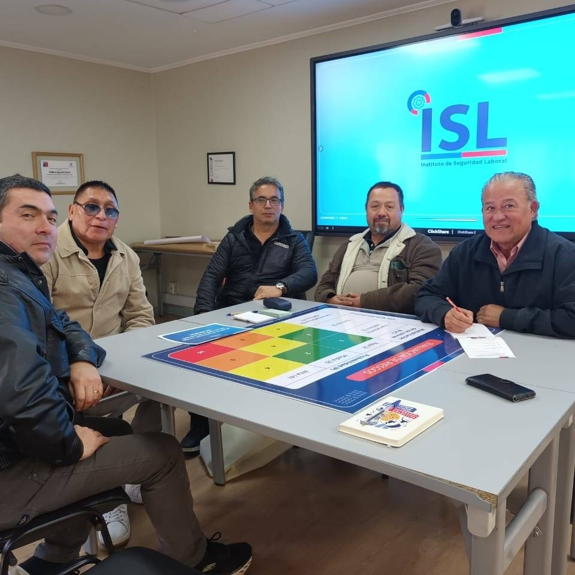

Fundado el 30 de mayo de 1985 con la participación de 85 trabajadores, los cuales se unieron para formar nuestro sindicato y bienestar social que comprendía el 1% de parte de la empresa y el 1% de parte de los trabajadores, quien fue asesorado por la Confederación Nacional Grafica Conagra y la Central Unitaria de Trabajadores CUT.

Trabajadores colaboradores
Años de historia
Comprometidos